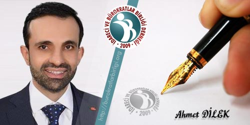

Dr. Ahmet Naci DİLEK / Savaşları izlemekle geçen bir ömür
Savaşları izlemekle geçen bir ömür
İnsanlık tarihi boyunca görülen savaş, yıkım, kan, vahşet, soykırım, gözyaşına bizim kaderimizde ne yazık ki şahitlik etti, ediyor maalesef.
Öncelikle kendimizi bildik bileli, gözümüzü açtığımızdan bu yana Filistin’in; gayri meşru siyonist terör devleti israil tarafından işgal edilmesi ve bu bağlamda her gün ama her gün, mazlum ama dirençli, masum ama güçlü, gariban ama elif gibi dik duran, maddi imkansızlık içinde ama onurlu, Ümmet’in ve İslam’ın dik ve vakarlı duruşunu işgalci siyonist terör güçlerine karşı direnerek gösteren ve bu direniş esnasında; körpe çocukların kollarının kırıldığı, kadın kıza siyonist terör devleti güçleri tarafından saldırıların olduğu, her türlü ağır silahla vahşice saldıran, insanların asırlardır yaşadıkları yurtlarından, topraklarından, güzelim zeytin ağaçlarının bulunduğu bahçelerinden, evlerinden, atalarının ve kendi anılarının bulunduğu, ve hepsinden önemlisi; inançlarıyla, kültürleriyle, kimlikleriyle kendilerini inşa ettikleri, bütünleştirdikleri bu kutsal topraklardan büyük iş makinalarıyla, tanklarla zorla çıkarıldığı, en gelişmiş savaş makinaları ile çıplak elle savaşan insanlara saldırıldığı ve katledildiği, saldırı için sık sık özellikle Ramazan ayının seçildiği, Kutsal mabedimiz, ilk kıblemiz Mescid-i Aksa’ya işgalci siyonist terör devleti askerlerinin postallarıyla girdiği ve ne akla, ne mantığa, ne imana, ne insanlığa ne herhangi bir dine ve kültüre, ve ne de evrensel değerlere, yakışmayacak insanlık dışı uygulamaların, sözde devlet eliyle terör saldırganlığı ve sınırları bir türlü belli olmayıp sürekli yayılan genişleyen sözüm ona bu devletin her gün ama her gün azgınca yayılmasını tv başından içimiz her zaman kan ağlayarak ve fakat çaresizlik! içinde izledik…
Afganistan-Sovyetler Birliği savaşıyla devam etti bu içler acısı kahrolası katliamlar, daha fazla zenginliğe, stratejik üstünlüğe, ideoloji transferine dayalı olarak mazlum, masum ve her yönüyle çaresiz insanların kıyımı için sonradan farkedeceği tuzağın içine düşen Sovyetler vahşice ve acımasızca Müslüman Afganistan’a saldırdı ve hem yüzbinleri katletti ve hem de istikrarsızlaşmasına sebep olduğu ülkede insanları uyuşturucu müptelası haline getirdi ve biz Allah’ın her günü tv başından adeta bir dizi gibi bu sahneleri izledik, öldürülen insanları, sakat kalan çocukları, gelecek ümidini kaybetmiş erkekleri, çaresiz gözlerle kadınları…
Yine o yıllarda batılıların kışkırtmaları ve silah üreticisi baronların provakasyonları ile iki müslüman halk Irak ve İran birbirine kırdırıldı. Bu savaşı da bir başka tv dizisi edasında yıllarca tv kanalından izledik, her gün onlarca, yüzlerce sivil, asker ama sonuçta sebebini dahi bilmedikleri bir savaşın içinde kendilerini bulmuş ve savaşı istedikleri veya istemedikleri kendilerine sorulmayan bu insanlar birbirlerine kırdırıldı geçti, jenerasyonlar bitirildi.
Ruanda halkının birbirine toplu katliamlarla yok ettirilmesini de yine tv kanallarından izlemeye devam ettik. Öldüren ne için öldürdüğünü bilmiyor, ölen neden dolayı öldüğünü bilmiyordu ama küresel amcalarının işlerinin yolunda gitmesi gerekiyordu ve bunun için soykırımlar yapılmak zorundaydı ve bu aşağılık vahşeti de insanlığa izlettirdiler.
Devamında Modern! Çağdaş! Demokratik! İnsan hakları savunucusu! Laik!Avrupanın tam da ortasında Yugoslavyanın çöküşü ve parçalanması sürecinde dünya tarihinin gördüğü en alçakça, vahşice, canavarca işlenen toplu soykırımların, tecavüzlerin ve savaşın ötesinde her şeye benzeyen Bosna savaşını ve Müslüman Boşnakların yaşadığı trajediyi yine tv başında sonu bir türlü gelmeyen bir dizi film edasında 3,5 yıl izlemeye devam ettik.
Aynı zaman diliminde Cezayirde iç savaş çılgınlığını körükleyen batı sayesinde yüzbinlerce insanımızın kendi kardeşinin canına kıymasını bu dizi filmlerin Afrika versiyonu gibi izlemeye devam ettik.
Yine Avrupanın ortasında tarih boyunca hristiyan Avrupanın kapı bekçileri olarak kendilerini konumlandıran ve Avrupanın da onlara el altından bu misyonu verdiği sırpların saldırganlığı ile Kosova halkının çaresizliğini ve onbinlerle ifade edilen insanın yok edilişini yine tv ekranlarından izledik.
90’lar hep kıyımların hatta aynı dönemde farklı coğrafyalarda acımasızca insanların yok edilişinin yıllarıydı: Hocalıda insanlık müsvetteleri ermenilerin masum Azerbaycanlı Türk kardeşlerimizi katledişlerini ve yaşanan dramı yine o siyah ekranlardan izledik.
Çeçenistan savaşı da bu yıllardaydı, Sovyet artığı koskoca Rusya’ya kök söktüren ve kimyalarını bozan Çeçen’lerin Rus’ların pis oyunlarıyla bastırılmalarını ve kukla yönetimi oluşturmalarını ve tüm bunları yaparken de Çeçenistan’ı yerle bir eden bir emperyal gücün caniliğini ve hatta emperyal emellerine ulaşmak için kendi vatandaşlarını ve anaokulundaki çocukları bombalayarak, yüzlerce insanını öldürerek kavgasını meşrulaştırmasını yine tv ekranlarından izledik.
Daha sonra vites büyüten ve ne kadar soykırımcı, yamyamlar olduğunu gösteren batılılar zenginliklerin merkezi olarak gördükleri Irak’a saldırdılar. Bahaneleri her zaman ki gibi demokrasi! ve insan hakları! idi, diğer taraftan diktatör bir lideri bahane ederek ve onun nükleer bomba yaptığı yalanını, sonradan itiraf etmek suretiyle yalan söylediklerini kabullendikleri ve fakat bu alçakça işgal yüzünden milyonlarca müslümanın ölümünü, kaybolan binlerce genci, namusları kirletilen kadınları, her gün patlayan bombaları, geceleri adeta bir havai fişek gösterisine dönüştürdükleri ve milyarları ekran başına bağlayarak dizi filmin bir başka versiyonunu izlettikleri bu kıyımı da tv ekranlarından izlemeye devam ettik, buradaki bir diğer farkta teknolojinin getirmiş olduğu imkanlarla bu sürecin internet başından da izlenmesiydi. En adi şekillerde aşağılayarak bir bayram günü Irak halkının liderini astılar, tüm bunları yaparken içerideki satılık elemanlarını da kullanarak elbette yaptılar tüm bunları, müslümanları aşağılayarak gerçekleştirdiler tüm bu canilikleri.
Sonrasında da Suriye halkı sıradaydı, Arap baharı adındaki bir kandırmaca ile tabi ki iç ekonomik, sosyal, siyasi sorunlardan da faydalanarak halkları sözüm ona rejim değişikliği safsataları ile kandırarak, hem var olan düzenlerini bozdular, hem ülkelerini yakıp yıktılar, hem de milyonların ölmesine ve mülteci durumuna düşmesine, binlerce çocuğun bir anda kaybolmasına sebep olanlar yine batılılardı. Yine bu görüntüleri ah vah ederek tv ve internet mecralarından an be an canlı olarak insanların yok edilmesini izlettirdiler/izledik.
Şartları tartışılsa da istikrarı ve ekonomik anlamda refahı yakalamış bir toplum olan Libya toplumunu da; sizin diktatörünüzü de siz devirmelisiniz diyerek öncelikle batılıların müdahaleleri ile başlayıp devamında galeyana getirilen halkın kendi liderini aşağılayarak katletmesini ve daha sonra halkın içine düştüğü iç savaşı tv ekranlarından izlemeye devam ettik.
Çocukların açlıktan, yetersiz gıdadan ve savaş şartlarının getirmiş olduğu kötü yaşam koşullarından dolayı öldüğü, bölgesel ve küresel güçlerin kışkırtmaları ve müdahaleleri ile Yemen’de her gün patlayan bombaları ve çaresiz kalan insanları ve ölümleri de aynı şekilde tv başından ve teknolojinin sunduğu imkanlarla! izledik.
Tabi özellikle müslüman coğrafyada: Endonezya, Pakistan, Bangladeş, Lübnan, Irak, Mısır, Libya, Tunus, Somali, Etiyopya… sık sık patlatılan bombaları, suikastleri, giden canları, canlı yayınlar eşliğinde katledilen insanları deaş terörü gibi iğrençlikleri: Miyanmardaki akıl almaz boyutta işlenen cinayetleri, vahşeti her türlü sosyal medya mecrasından izledik.
Çin’in Doğu Türkistan’lı kardeşlerimize yaptığı asimilasyon ve soykırım politikalarını ve insan onuruna hiç bir biçimde yakışmayan uygulamalarını da aynı tarzda izlemeye devam ettik.
Ve insanlığın düştüğü bu zelil durum nasıl olduysa iki hristiyan toplumu da karşı karşıya getirdi ve Rusya’nın Ukrayna’ya saldırısı ile hiç beklenmeyen bir şekilde savaşı Avrupa’nın ortalarına getirdi ve bu günlerde de her türlü mecradan canlı canlı; insanların, şehirlerin, doğanın yok edilişini yine izlemeye devam ediyoruz.
Ey insanlar! Bakın biz sizi, bir erkekten ve bir kadından yarattık. Sizi birbirinizi tanıyasınız diye, milletlere ve kabilelere ayırdık. Şüphesiz Allah katında şerefli ve itibarlı olanınız, yaşantısını, yolunu, yordamını Allah'ın kitabıyla bulmaya çalışanlarınızdır. Çünkü Allah, herşeyi bilendir, herşeyden haberdar olandır. Hücurat 13. Ayet
Yukarıdaki ayet çerçevesinde: İnsan şöyle durup düşünüyor da ne kadar acıdır bu tablo, insanlar ölüyor, öldürülüyor, asimile ediliyor, işkenceye maruz bırakılıyor, evinden yurdundan, eşinden çocuğundan, ailesinden, şehrinden vatanından ayrı bırakılıyor ve çaresizce tüm bu olanları bazen bir film gibi, bazen bir savaş oyunu gibi, bazen de tanımlayamadığınız bir şekilde izliyorsunuz ve çaresizsiniz, kendi insanlığınızdan utanıyorsunuz, olanlara inanamıyor ve inanmak istemiyorsunuz, elinizden bir şey gelmiyor, olayların değişmesi için hiçbir şey yapamıyorsunuz, yapması gerekenlerin yapmadığını bilmenize rağmen bu çaresizliği yaşamak bu alanlara şahitlik etmek ne kadar tarif edilemez bir acıdır? Sonra dönüyorsunuz Rab’binize ve tüm mazlum halklar için dua etmekten ve insanlığın felaha ulaşması özbenliğine dönmesi Rabbin’e dönmesi için dua etmekten başka bir çarenizin olmadığını da fark ediyorsunuz. İnsanlığın kendi kendini kurtaracağı yok: Allah insanlığı kurtarsın.